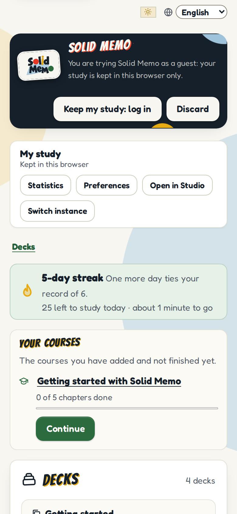
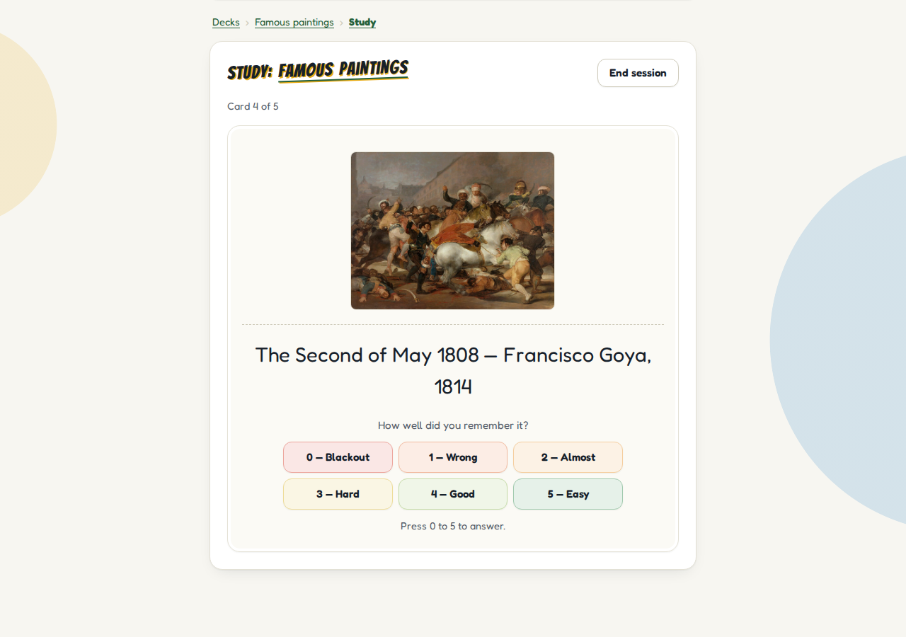
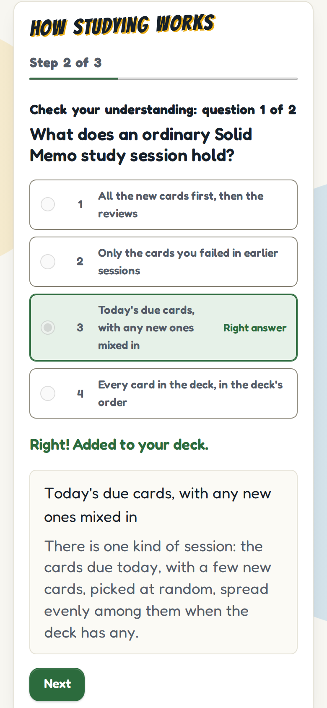
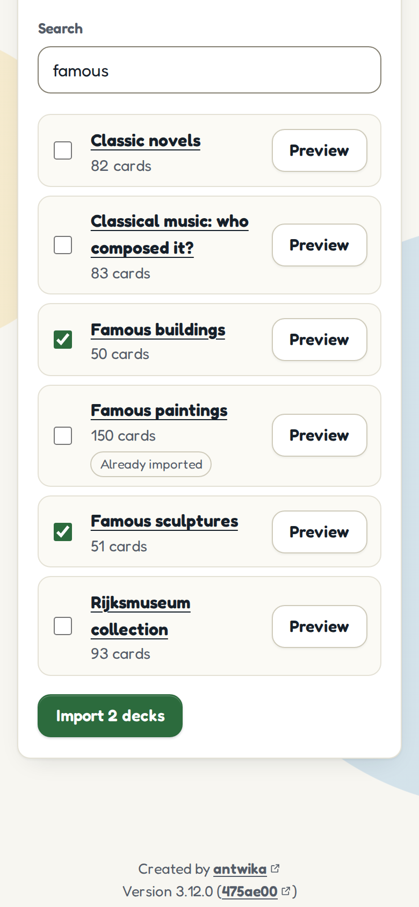
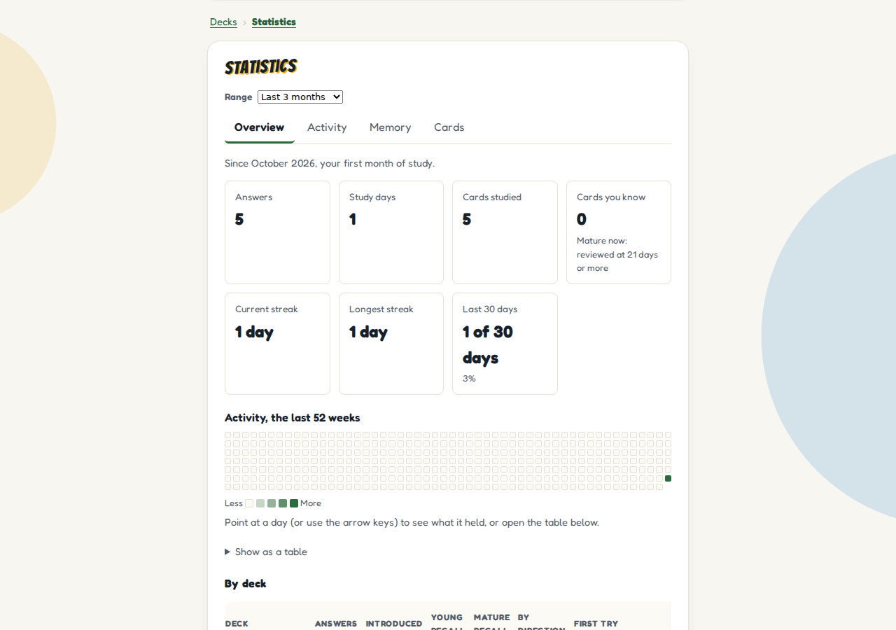
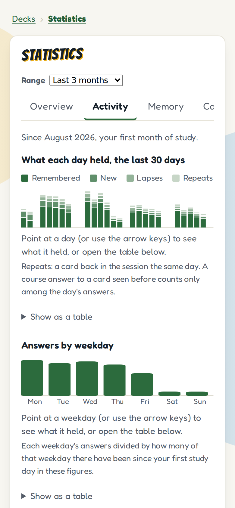
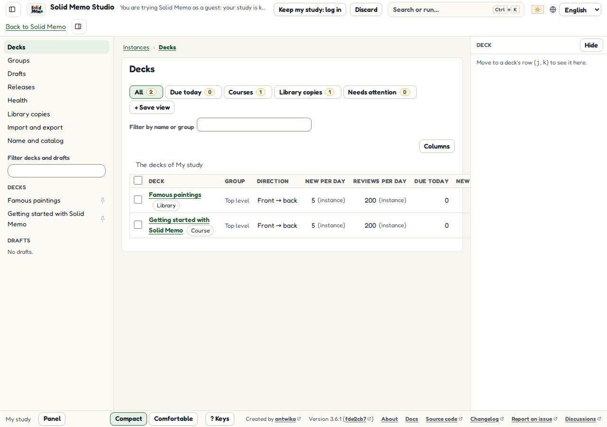

Solid Memo
Spaced-repetition flashcards that live in your own Solid Pod.
Solid Memo is a free flashcard app. It shows you each card again just before you would forget it, so a few minutes a day are enough to remember what you learn. Your cards and your progress are kept in a Solid Pod that you choose, not on our servers.
Screenshots
The app in English on a phone, as a guest tries it with no account, after some weeks of study; the Studio on a desktop's screen.
-

Your decks -

Studying a card -

A course's chapter -

The deck library -

Your progress -

Study activity -

Solid Memo Studio, for deck authors
For learners
- Study flashcards a little every day. Solid Memo schedules each card with the SM-2 method, or with FSRS-6 if you choose it: a card you know comes back after days, then weeks; a card you forgot comes back soon.
- Start right away as a guest, with no account. What you study is kept in your browser, and you can move it into your own Pod when you log in.
- Add ready-made decks and courses from the library, or make your own decks. A course teaches a subject in short chapters, and every question you answer becomes a card to review later.
- Your data is yours: it lives in your Pod, in open formats, and you can take it with you. Solid Memo keeps no account of yours and costs nothing.
- The app speaks English, Swedish, Korean, German, Spanish and French.
For technologists
- A static web app in TypeScript and Preact, with no back end: it talks to the user's Solid Pod directly, and logs in with Solid-OIDC.
- Data is RDF. Solid Memo's own vocabulary and SHACL shapes are published with the site, and the app checks the data it reads against them. The deck library is a DCAT catalog that conforms to DCAT-AP.
- Hexagonal layers, each its own package, with 100% test coverage, and end-to-end tests against several Solid servers.
- Released under the MIT License. Read the architecture to find your way around.
For decision makers
- No lock-in: learners keep their data in a Pod of their choice, in open standards (Solid, RDF, DCAT-AP, SHACL) that other software can read.
- Nothing to host but static files. Anyone can run their own copy on any web server, under the MIT License.
- Solid Memo is stable from version 1.0.0, and a change that breaks what it stores comes with a new major version. It is a volunteer project, run by one maintainer, with no funding and no organization behind it.
- It works toward the Standard for Public Code; see the assessment. Questions and ideas are welcome in the issue tracker.